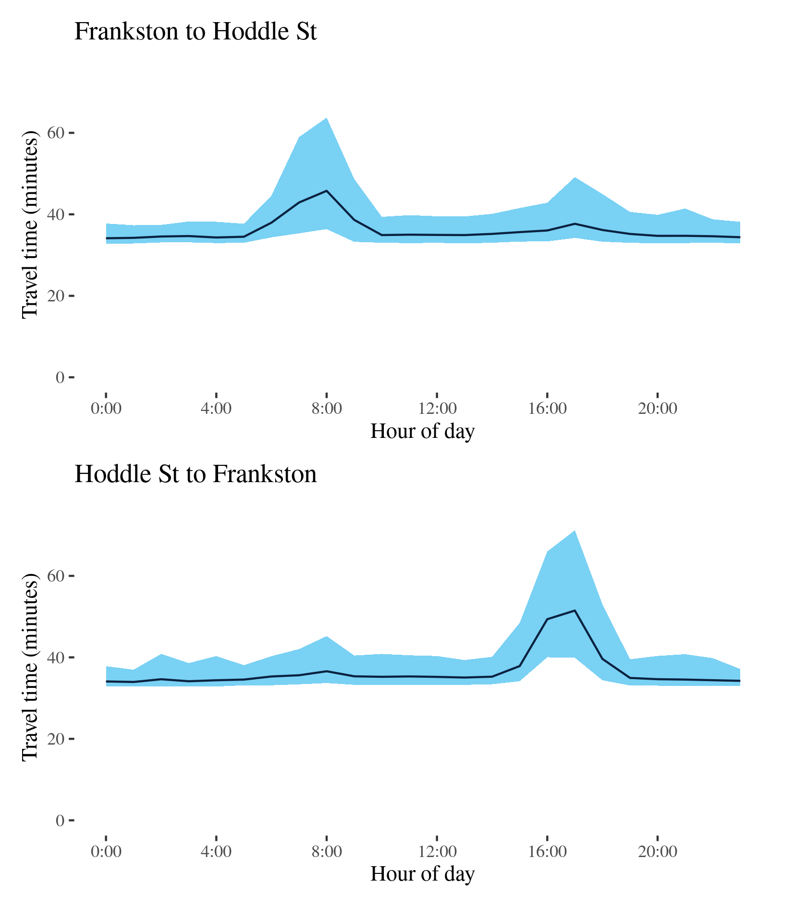
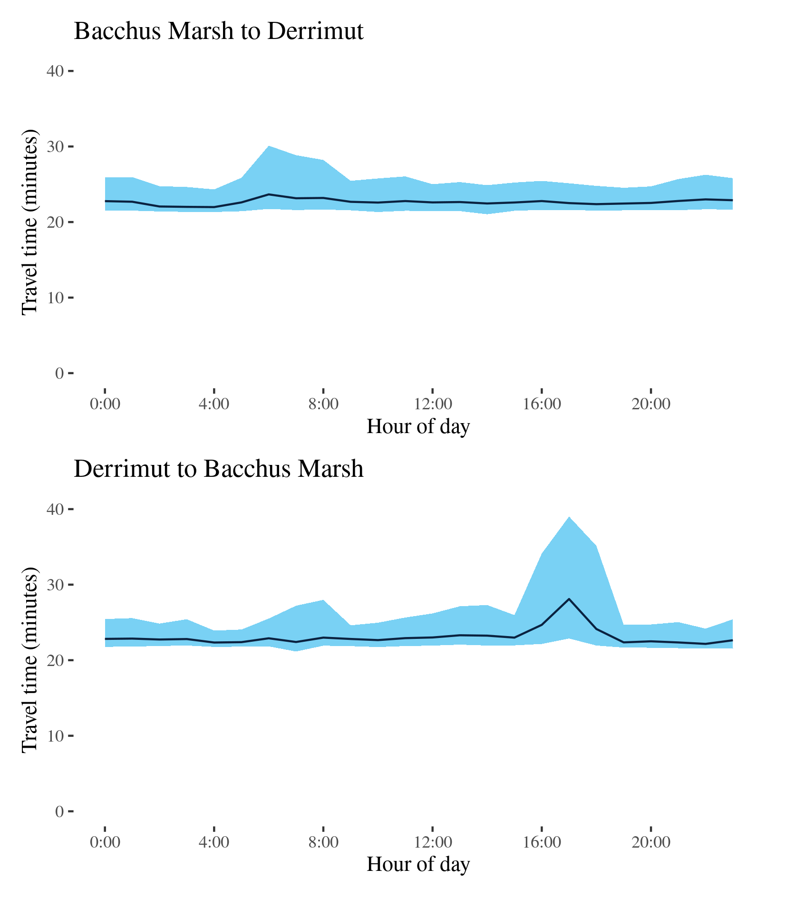

Congestion Report 2019
Congestion Report 2019Melbourne
Like Sydney routes, the results show that routes terminating in or near the Melbourne CBD – including M1 (East) and M1 (West) – generally exhibit higher METRs than other routes, with peak period travel times up to 1.2 or 1.3 times the best (shortest) travel time. These routes also exhibit the greatest variation in travel times, with the MEUR – i.e. the ratio of the median variation in travel time to minimum variation in travel time – also highest for the M1 (East), M1 (West), both around 3.5 to 4.0. In contrast, Routes 32, which traverses the metropolitan area (east–west) and through Melbourne CBD, and the M2, which connects the CBD and Melbourne Airport, do not exhibit as much variation in median travel times.
Route 32 - Derrimut to Montrose / Montrose to Derrimut
This surface route crosses Melbourne linking Derrimut in the West and Montrose in the east. Along its way, it crosses under the M80, passes Somerville Road, Footscray Road, Port of Melbourne and Victoria Street/Parade at Carlton, Burke Road in Camberwell, Canterbury Road, and intersects with the M3 at Ringwood.
| Direction | Best travel time | Longest median travel time | METR | Least uncertainty travel time | Most uncertainty travel time | MEUR | Distance |
|---|---|---|---|---|---|---|---|
| Derrimut to Montrose | 01:04:36 | 01:21:17 | 1.1 | 00:35:16 | 01:00:31 | 1.3 | 52.9 |
| Montrose to Derrimut | 01:11:25 | 01:37:58 | 1.2 | 00:46:23 | 02:22:34 | 1.7 | 53.1 |
The best median travel times and least uncertainty for journeys from Derrimut to Montrose were at 4am with a median travel time of 1 hour 5 minutes and an interquartile range of 35 minutes. The longest median travel times were at 4pm with a median of 1 hour 21 minutes and the greatest uncertainty was at 3pm with an interquartile range of 1 hours.
The best median travel time and least uncertainty for journeys from Montrose to Derrimut were at 5am with a median travel time of 1 hour 11 minutes and an interquartile range of 46 minutes. The longest median travel times and greatest uncertainty were at 5pm with a median of 1 hour 38 minutes and an interquartile range of 2 hour 23 minutes.
The easterly trip to Montrose and the Westerly trip to Derrimut were similar in terms of travel time, travel time uncertainty and their patterns over the day. Elevated travel time and uncertainty were observed during business hours in both directions. There were no pronounced peaks in either direction.
Route 55 - Hume Freeway to Montague St / Montague St to Hume Freeway
This surface route connects the Hume Freeway at Craigieburn and Montague Street in south Melbourne via Sydney Road through Somerton, Coburg and North Melbourne, skirting the CBD along Dudley Street and Wurundjeri Way.
| Direction | Best travel time | Longest median travel time | METR | Least uncertainty travel time | Most uncertainty travel time | MEUR | Distance |
|---|---|---|---|---|---|---|---|
| Hume Freeway to Montague St | 00:34:13 | 00:52:49 | 1.2 | 00:22:22 | 01:49:58 | 2.2 | 28 |
| Montague St to Hume Freeway | 00:32:19 | 00:45:15 | 1.2 | 00:19:09 | 01:17:16 | 2.0 | 28 |
The best travel times for journeys from the Hume Freeway to Montague Street were at 9pm with a median travel time of 34 minutes and the lowest uncertainty were at 5am with an interquartile range of 22.5 minutes. The longest median travel times was 53 minutes at 4pm and the greatest uncertainty was at 3pm with an interquartile range of 1 hour 50 minutes. Delays were fairly evenly spread along the route but somewhat more apparent near the CBD and the M80 (Metropolitan Ring Road) at Broadmeadows.
The best median travel times for journeys from Montague Street to the Hume Freeway were 32 minutes at 11pm and the lowest uncertainty were at 1am with an interquartile range of 19 minutes. The longest median travel times was nearly 45 minutes at 3pm and the highest uncertainty were at 6pm with an interquartile range of 1 hour 17 minutes. Delays were spread fairly evenly throughout the route but slightly more apparent south of Coburg.
Median travel times were similar in both directions throughout the day and uncertainty was also heightened throughout business hours.
Route 56 - Laverton to Spotswood / Spotswood to Laverton
This surface route travels a short distance between Laverton and Spotswood in Melbourne’s West using Dohertys Road, Grieve Parade and Blackshaws Road and passes a number of light industrial areas.

| Direction | Best travel time | Longest median travel time | METR | Least uncertainty travel time | Most uncertainty travel time | MEUR | Distance |
|---|---|---|---|---|---|---|---|
| Laverton to Spotswood | 00:11:45 | 00:14:42 | 1.1 | 00:04:31 | 00:08:59 | 1.5 | 9.1 |
| Spotswood to Laverton | 00:11:22 | 00:15:46 | 1.1 | 00:04:18 | 00:15:00 | 1.7 | 9.1 |
The best travel times and lowest uncertainty travelling from Laverton to Spotswood were at 4am with a median travel time of 12 minutes and an interquartile range of 4.5 minutes. The longest median travel times and greatest uncertainty were at 2pm with a median of 15 minutes and an interquartile range of 9 minutes. Delays were most apparent on Blackshaws Road in Altona North. Travel time and uncertainty were heightened throughout business hours.
The best travel times travelling from Spotwood to Laverton were at 9pm with a median travel time of 11 minutes and the lowest uncertainty were at 7pm and an interquartile range of 4 minutes. The longest median travel times and highest uncertainty were in the afternoon peak at 2pm with a median of nearly 16 minutes and an interquartile range of 15 minutes. Delays were fairly evenly spread along the route but were slightly more pronounced towards Laverton.
The data suggests a third early morning peak in both directions around 2am but the reasons for this are unclear.
Route 58 - Greenvale to Yan Yean Road / Yan Yean Road to Greenvale
This surface route crosses large part of Melbourne’s northern fringe connecting Mickleham Road in the west and the intersection of Gorge Road and Yan Yean Road near Plenty in the east. It uses Somerton Road, Cooper Street, High Street and McDonalds Road.
| Direction | Best travel time | Longest median travel time | METR | Least uncertainty travel time | Most uncertainty travel time | MEUR | Distance |
|---|---|---|---|---|---|---|---|
| Greenvale to Yan Yean Road | 00:24:53 | 00:35:26 | 1.2 | 00:14:43 | 00:37:59 | 1.5 | 22.6 |
| Yan Yean Road to Greenvale | 00:25:33 | 00:35:00 | 1.1 | 00:16:18 | 00:47:28 | 1.5 | 22.2 |
The best median travel time and lowest uncertainty travelling from Greenvale to Yan Yean Road were at 5am with a median of nearly 25 minutes and an interquartile range of 15 minutes. The longest median travel times and greatest uncertainty were in the afternoon peak at 3pm with a median of 35 minutes and an interquartile range of nearly 38 minutes. Delays were spread evenly along the route but somewhat more apparent in High Street Epping.
The best median travel time travelling from Yan Yean Road to Greenvale were at 4am with a median of 26 minutes and the lowest uncertainty were at 2am with an interquartile range of 16 minutes. The longest median travel times were in the afternoon peak at 3pm with a median of 35 minutes and the highest uncertainty were at 8am with an interquartile range of 47 minutes. Delays were slightly more apparent near South Morang.
M1 (West) - City to M80 / M80 to City
This route follows the West Gate Freeway (M1) connecting at its confluence with the Western Ring Road (M80) at Altona and the M2 at south Melbourne. It serves extensive freight areas around Port Melbourne and in Melbourne’s west.

| Direction | Best travel time | Longest median travel time | METR | Least uncertainty travel time | Most uncertainty travel time | MEUR | Distance |
|---|---|---|---|---|---|---|---|
| City to M80 | 00:07:14 | 00:18:16 | 1.3 | 00:01:24 | 00:19:05 | 4.0 | 9 |
| M80 to City | 00:07:22 | 00:13:35 | 1.2 | 00:01:37 | 00:15:52 | 3.6 | 9 |
The best travel times and lowest uncertainty travelling from the City to the Western Ring Road (M80) were at 5am with a median travel time of 7 minutes and an interquartile range of 84 seconds. The longest median travel times and greatest uncertainty were in the afternoon peak at 5pm with a median of 18 minutes and an interquartile range of 19 minutes. Delays were spread evenly along the route, but were most severe near Port Melbourne.
The best median travel times for journeys from the Western Ring Road (M80) to the CBD was over 7 minutes at 4am and the lowest uncertainty were at 5am with an interquartile range of 97 seconds. The longest median travel times and highest uncertainty were in the morning peak at 8am with a median of 14 minutes and an interquartile range of 16 minutes. Delays were slightly more apparent at the ends of the route at Altona and Port Melbourne during the morning peak, and most severe at Port Melbourne in the afternoon peak.
The CBD bound route had only a single peak of travel time and uncertainty, whereas the reverse trip had two peaks with the morning peak more obvious than the afternoon peak.
M1 (East) - City to M420 / M420 to City
This route follows the M1 connecting Port Melbourne and the South Gippsland Freeway (M420) on Melbourne’s fringes. It serves light industrial areas around Dandenong and interregional freight from Gippsland. For most of its length it is known as the Monash Freeway.

| Direction | Best travel time | Longest median travel time | METR | Least uncertainty travel time | Most uncertainty travel time | MEUR | Distance |
|---|---|---|---|---|---|---|---|
| City to M420 | 00:25:38 | 00:59:14 | 1.2 | 00:06:16 | 01:12:06 | 3.4 | 36.0 |
| M420 to City | 00:25:13 | 00:46:13 | 1.2 | 00:04:41 | 00:56:25 | 4.0 | 36.5 |
The best travel times and lowest uncertainty travelling from the CBD to Dandenong were at 5am with a median travel time of 26 minutes and an interquartile range of 6 minutes. The longest median travel times and greatest uncertainty were in the afternoon peak at 4pm with a median of 59 minutes and an interquartile range of 1 hour 12 minutes. Delays were most severe near the CBD and speeds largely improved to closer to Dandenong, with the exception of delays around Burke Road in Camberwell. Uncertainty was higher throughout business hours, but with only a single distinct peak.
The best travel times and lowest uncertainty travelling from Dandenong to the CBD were at 4am with a median travel time of 25 minutes and an interquartile range of 5 minutes. The longest median travel times and highest uncertainty were in the morning peak at 7am with a median of 46 minutes and an interquartile range of 56 minutes. There was a similar, if slightly smaller, peak in the afternoon. Delays were slightly more apparent just north east of the intersection with the M3 (Eastlink) in the morning peak and near South Melbourne in the afternoon peak.
M2 - CityLink then Tullamarine / Tullamarine then CityLink
This route connects Melbourne Airport and the M1 at Port Melbourne via the CityLink toll road and Tullamarine Freeway.

| Direction | Best travel time | Longest median travel time | METR | Least uncertainty travel time | Most uncertainty travel time | MEUR | Distance |
|---|---|---|---|---|---|---|---|
| CityLink then Tullamarine | 00:14:44 | 00:15:33 | 1 | 00:01:13 | 00:06:02 | 2.4 | 19.8 |
| Tullarmarine then CityLink | 00:14:32 | 00:16:31 | 1 | 00:01:13 | 00:09:02 | 2.5 | 19.8 |
The best travel times and lowest uncertainty from the City to the Airport were at 5am with a median travel time of 15 minutes and an interquartile range of 73 seconds respectively. The longest median travel times were in the afternoon peak at 5pm, however, this was only 49 seconds (5.6 per cent), longer than the best travel time. Uncertainty was greatest at 10pm with an interquartile range of 6 minutes. This is likely due to imposed roadwork speed limits that were present at some points in 2019. This would not reflect uncertainty experienced by vehicles who would be aware if roadworks were occurring or not on a given day. The greatest uncertainty was at 5pm with an interquartile range of about 6 minutes.
The best travel times and lowest uncertainty from the Airport to the CBD were at 5am with a median travel time of 14.5 minutes and an interquartile range of 73 seconds. The longest median travel times were in the morning peak at 8am, with 2 minutes longer than the best travel time. Uncertainty was greatest at 8am with an interquartile range of 9 minutes. Uncertainty at night also appears to be attributable to roadwork.
In both directions delays were most apparent close to the M1.
M3 - Frankston to Hoddle St / Hoddle St to Frankston
This route runs between Abbotsford and Frankston in Melbourne’s far south east. It uses the Eastern Freeway, Eastlink and the Frankston Freeway.

| Direction | Best travel time | Longest median travel time | METR | Least uncertainty travel time | Most uncertainty travel time | MEUR | Distance |
|---|---|---|---|---|---|---|---|
| Frankston to Hoddle St | 00:34:08 | 00:45:46 | 1.1 | 00:04:19 | 00:27:22 | 2.1 | 53.0 |
| Hoddle St to Frankston | 00:33:57 | 00:51:29 | 1.1 | 00:04:06 | 00:31:18 | 2.3 | 53.3 |
The best median travel times travelling from Frankston to Hoddle Street were 34 minutes at midnight and the lowest uncertainty were 2am with an interquartile range of 4 minutes. The longest median travel times and greatest uncertainty were in the morning peak at 8am with a median of 46 minutes and an interquartile range of over 27 minutes. Delays were most severe near the end of the motorway at Hoddle Street, but there was also some indication of delays around the Melba tunnel at Ringwood and near the intersection with Wellington Road near Rowville. There was also a second, milder, peak in uncertainty in the afternoon.
The best travel times and lowest uncertainty travelling to Frankston were at 1am with a median travel time of 34 minutes and an interquartile range of 4 minutes. The longest median travel times and highest uncertainty were in the afternoon peak at 5pm with a median of 51.5 minutes and an interquartile range of 31 minutes. Delays were most severe on the Eastern Freeway with signs of milder delays just north of Frankston.

M79 - Essendon to Gap Road / Gap Road to Essendon
This lengthy motorway route follows the A79/M79 from Gap Road, west of Sunbury, to Essendon where it joins the CityLink toll road. For most of its length it is known as the Calder Freeway.

| Direction | Best travel time | Longest median travel time | METR | Least uncertainty travel time | Most uncertainty travel time | MEUR | Distance |
|---|---|---|---|---|---|---|---|
| Essendon to Gap Road | 00:18:31 | 00:22:59 | 1.0 | 00:01:58 | 00:12:22 | 1.9 | 27.3 |
| Gap Road to Essendon | 00:16:46 | 00:19:38 | 1.1 | 00:01:34 | 00:08:15 | 2.2 | 27.2 |
The best median travel times from Essendon to Gap Road were 18.5 minutes at 1pm and the lowest uncertainty were at 8pm with an interquartile range of 2 minutes. The longest median travel times and highest uncertainty were in the afternoon peak at 5pm with a median of 23 minutes and an interquartile range of 12 minutes. Delays were again most evident near the Western Ring Road interchange.
The best travel times and lowest uncertainty travelling from Gap Road to Essendon were at 4am with a median travel time of 17 minutes and an interquartile range of 1.5 minutes. The longest median travel times were at 8am with a median of 20 minutes and the greatest uncertainty was at 7am with an interquartile range of 8 minutes. Delays were most evident near the end of the motorway near the intersection with the Western Ring Road.
M80 - Altona to Greensborough / Greensborough to Altona
This route follows the M80 (Western Ring Road) in the west and north of Melbourne. It passes through the western outskirts of the Melbourne metropolitan area as the Western Ring Road, meets the M1 and proceeds to the Greensborough Bypass in north-east Melbourne as the Metropolitan Ring Road.

| Direction | Best travel time | Longest median travel time | METR | Least uncertainty travel time | Most uncertainty travel time | MEUR | Distance |
|---|---|---|---|---|---|---|---|
| Altona to Greensborough | 00:24:31 | 00:41:47 | 1.1 | 00:03:34 | 00:30:01 | 2.5 | 37.5 |
| Greensborough to Altona | 00:24:18 | 00:30:30 | 1.1 | 00:03:41 | 00:22:19 | 2.0 | 37.4 |
The best travel times and lowest uncertainty for trips from Altona to Greensborough were at 4am with a median travel time of 24.5 minutes and an interquartile range of 3.5 minutes. The longest median travel times and greatest uncertainty were in the afternoon peak at 5pm with a median of 42 minutes and an interquartile range of 30 minutes. Delays were most evident near the end of the motorway at Bundoora with indications of delays near the intersections with the Westlink and Tullamarine Freeways. There was a mild morning peak as well with delays concentrated near Greensborough.
The best travel times for trips from Greensborough to Altona were 24 minutes at 4am and the lowest uncertainty were at 5am with an interquartile range of 4 minutes. The longest median travel times and highest uncertainty were in the morning peak at 8am with a median of 30.5 minutes and an interquartile range of 22 minutes. Delays were again most evident at the start of the M31 (leading to the Hume Freeway) at Thomastown and near the M8 (Western Freeway) at Derrimut. There was also a second afternoon peak with delays most severe near the confluence of the M80 with the M1.
Western Freeway - Bacchus Marsh to Derrimut / Derrimut to Bacchus Marsh
This route follows the Western Freeway (M8) linking Bacchus Marsh west of Melbourne and Derrimut where it meets the M80 (Western Ring Road).
| Direction | Best travel time | Longest median travel time | METR | Least uncertainty travel time | Most uncertainty travel time | MEUR | Distance |
|---|---|---|---|---|---|---|---|
| Bacchus Marsh to Derrimut | 00:21:59 | 00:23:40 | 1 | 00:02:59 | 00:08:22 | 1.4 | 35.7 |
| Derrimut to Bacchus Marsh | 00:22:10 | 00:28:06 | 1 | 00:02:10 | 00:16:09 | 2.3 | 35.6 |
The best travel times and lowest uncertainty travelling from Bacchus Marsh to Derrimut were at 4am with a median travel time of 22 minutes and an interquartile range of 3 minutes. The longest median travel times and greatest uncertainty were in the morning peak at 6am with a median of 24 minutes and an interquartile range of 8 minutes. There is evidence of mild delays at Melton.
The best median travel times travelling from Derrimut to Bacchus Marsh were 22 minutes at 10pm and the lowest uncertainty were at 4am with an interquartile range of 2 minutes. The longest median travel times and highest uncertainty were in the afternoon peak at 5pm with a median of 28 minutes and an interquartile range of 16 minutes. This peak was more severe than the morning peak in the other direction and delays were concentrated close to where the motorway meets Ballarat Road coming from Deer Park.
